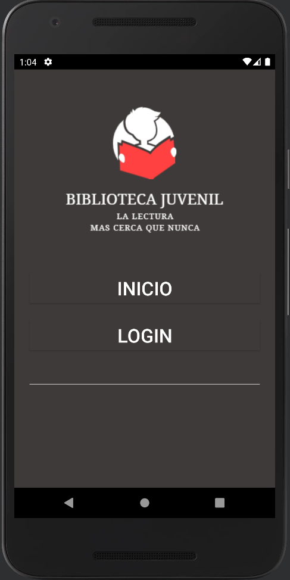

Soy una persona curiosa y apasionada, es por eso que desde que conocí el arte de escribir código, creció en mí la pasión por aprender y entender sobre las nuevas tecnologías, teniendo metas y objetivos claros, deseando enfrentar nuevos retos que me hagan crecer personal y profesionalmente.
Sobre mí
Hobbies
- Jugar futbol
- Escuchar música
- Jugar videojuegos
- Ver series o películas
- Viajar
Habilidades blandas
- Facilidad de comunicación
- Saber delegar
- Escucha activa
- Trabajo en equipo
- Autoevaluacion
- Liderar con ejemplo
- Resolución de conflictos
- Honestidad
Habilidades

Unity

C#

Git

HTML5

CSS3

PHP
Kotlin

Firebase

Python

MySQL

SQL server
Proyectos
Pirates Go
The Time Diamond Adventure
Futuristic Skateboard
Extravehicular Activity
Biblioteca Juvenil WEB
Biblioteca Juvenil APP Android

Biblioteca Juvenil WEB


Este es un proyecto personal el cual está pensado para poder implementar una
biblioteca con secciones especiales para cada temática, cuenta con un login el cual permite el
ingreso a contenido más sensible.
En este proyecto se utilizaron #HTML5, #CSS3, #PHP y
#MYSQL
Biblioteca Juvenil APP Android

- 


Esta APP permite ingresar a diferentes bibliotecas públicas directamente desde
la APP y cuenta con varias bibliotecas diferenciadas por categorías, la APP cuenta con un inicio
de sesión por medio de un correo y contraseña o por medio de una cuenta de Google, esta app fue
escrita en el lenguaje de #Kotlin y se utilizó #Firebase para la Base de Datos y la
autentificación de usuarios.